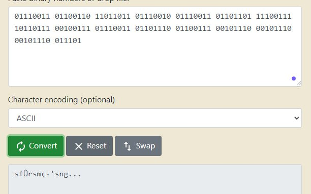
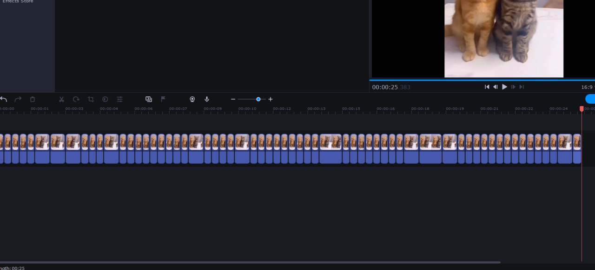
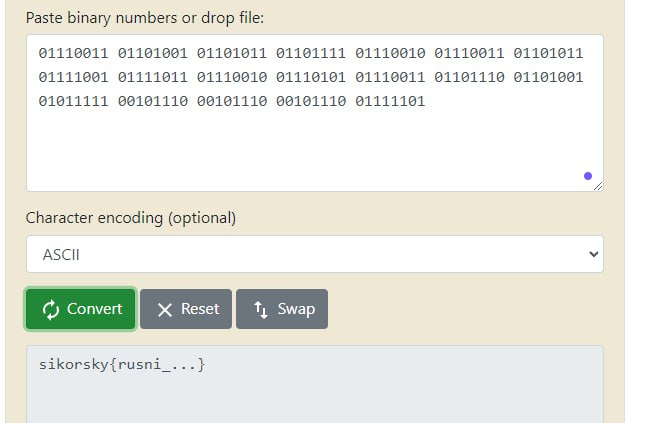

Sikorsky 2023 CTF
[Sikorsky CTF 2023] - link for the event;
The flag pattern for this CTF is sikorsky{...}, where instead of "..." some secret text.
TalkingCats
As an input data we have pretext:
"These kittens clearly want to say something, listen up."
And a video file:
Solution
There were a few unsteganographic assumptions:
(1) In the first part of the video there is a sound, after that there is just a sequence of pictures without it, which means that I can compare individual pictures and the sounds that were with them. So the code for the second part of the video is such that each picture corresponds to the sound of the answer
(2) Open mouth = 1, closed mouth = 0; Сompose the answer in binary form from zeros and ones and convert it to UTF-8
(3) As an assumption(2), but now we pay attention to the interval: some pictures have long durations, the others have short one. Let's say we will look at the image every 0.1 seconds and record a binary pair. The longer the same image goes, the more times we will record the same binary pair
(4) If all of the above ideas are failed - I can always use some steganography magic
------
The (1)st idea gave nothing but some spooky noises, so that idea goes to trash bin.
(2)nd idea gave me some hope until i realised that there were only 63 different frames!
Which leads to 126 pares.
And knowing full well that each character consists of 8 bits we get to the conclusion that there are not enough cat pictures.
But anyway I gave this result a try and got this using online [bin to text] converter:
Great! We got the first letter correct!
Now the question is: timing. How long should be time interval to look at a cat picture?
Using some video editor i splitted the second part of the video in such way that every other different frame has a visible duration time. The point was to see, how random these intervals of each frame:
Here I noticed that there were only three types of delay:
- 1/3 of a second
- 2/3 of a second
- 3/3 of a second
Great! Now assuming that the shortest duration is 1/3 second I got to the idea that I should look at the frame every 1/3 seconds.
Doing calculations:
Now I have 76 binary pares which is 152 bits = 19 characters
Perfect:
Bingo!
SuperPaskal
As an input given the pretext:
"Kitten saved the flag with ID as in id.txt and now wants to get it back. Where are the flags issued?"
And two files: id.txt file itself and pascal source code:
id.txt:
flag.202.63.228.85.85.111.176.237.211.37.124.111.33.85.150.125.202.215.211.229.111.215.211.229.138.89.37.163
super.pas:
program super; const hope = 'i hope you dont study it now'; var flag: string; free: array of byte; i, j: integer; begin writeln('SuperPascal: Free Flags Storage for Everyone!'); writeln; write('Enter your flag: '); readln(flag); setlength(free, length(flag)); for i:=1 to length(flag) do begin j := ord(hope[i mod length(hope)]) mod length(flag); while free[j] <> 0 do j := (j + 1) mod length(flag); free[j] := (ord(flag[i]) * 13) mod 256; end; write('Flag received with ID flag'); for i:=0 to length(flag)-1 do write('.', free[i]); writeln; end.
Solution
Obviously there were a smart and time-efficient solution, but who cares!
First of all we nolice that in id.txt every number can be an ASCII symbol:
With help of python we convert it into sequence of characters
l=[202,63,228,85,85,111,176,237,211,37,124,111,33,85,150,125,202,215,211,229,111,215,211,229,138,89,37,163] result="" for num in l: result+=chr(num) print(result)
And the result is:
Ê?äUUo°íÓ%|o!U}Ê×Óåo×ÓåY%£
OK, wrong direction, then let's analize the code and keep in mind that potentially the flag length = 28 characters.
To make long story short:
- We have constant hope as a cyphering key;
hope = 'i hope you dont study it now';
readln(flag);
j = (int)hope[i % len(hope)] % len(flag)
free[j] := (ord(flag[i]) * 13) mod 256;
write('.', free[i]);
Sooo the numbers that we have in id.txt is a result of this program.
Let's reverce first few chars step-by-step, then we'll write an algorithm and see what it will bring us.
- flag[1] := x //for shortness
- hope[1] = ' ' = 32(ASCII)
- j := 32 % 28 = 4
- free[4] == 0 => free[4] := (x * 13) % 256
- From id.txt: free[4] = 85
- Our equasion to solve: (x * 13) % 256 = 85
- x = (n*256+85)/13, where n is natural number
- if n = 1 -> 256+85=341 is not divisible by 13
- if n = 2 -> 512+85=597 is not divisible by 13
- if n = 3 -> 768+85=853 is not divisible by 13
- if n = 4 -> 1024+85=1109 is not divisible by 13
- if n = 5 -> 1280+85=1365 is divisible by 13
- 1365/13 = 105 = 'i'
- so the flag[1] = 'i'
To do this for every element I wrote a python script:
free_not_free=[202,63,228,85,85,111,176,237,211,37,124,111,33,85,150,125,202,215,211,229,111,215,211,229,138,89,37,163] free=[0,0,0,0,0,0,0,0,0,0,0,0,0,0,0,0,0,0,0,0,0,0,0,0,0,0,0,0] hope = 'i hope you dont study it now' flag=[0,0,0,0,0,0,0,0,0,0,0,0,0,0,0,0,0,0,0,0,0,0,0,0,0,0,0,0] for i in range(0,28): j = ord(hope[i % 28]) % 28 while free[j] != 0: j = (j+1)%28 n=0 while (n*256+free_not_free[j])%13 != 0: n=n+1 flag[i%28] = (n*256+free_not_free[j])//13 free[j] = (n*256+free_not_free[j])//13 for i in range(0,28): print(chr(flag[i]),end="")
And we have our answer:
sikorsky{party_like_in_1992}
P.S.: in original pascal code it seem that there is a mistake in the last cycle - it stats with "0" and goes to "len(free)-1".
In Pascal array indeces start with 1, so it should be:
... for i:=1 to length(flag) do ...